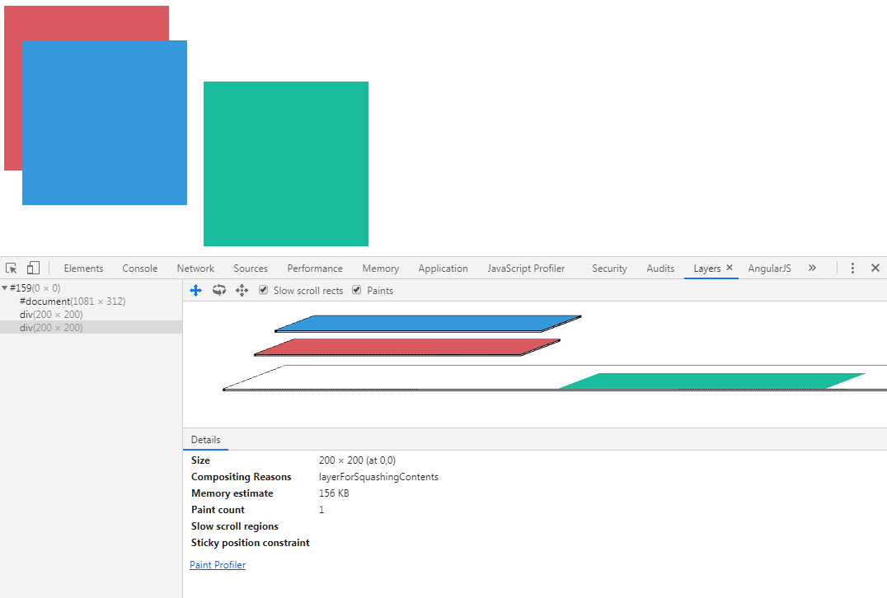

原文连接:https://www.cnblogs.com/dashnowords/p/11885045.html
示例代码托管在：http://www.github.com/dashnowords/blogs
博客园地址：《大史住在大前端》原创博文目录
华为云社区地址：【你要的前端打怪升级指南】

一. 硬件加速相关的几个概念
之前介绍到了RenderLayer渲染层的概念，在涉及到硬件加速的话题时，出现了很多新的概念，参考《Webkit技术内幕》一书的介绍总结如下：
Webkit决定将哪些RenderLayer对象组合在一起，形成一个有后端存储的新层，这一新层不久后会用于合成，这里称之为合成层（CompositingLayer）。每一个合成层都会对应一个或多个后端存储，由RenderLayerBacking类进行统一管理，后端存储空间使用GraphicsLayer来表示，也就是说RenderLayerBacking管理着一个或多个与对应的合成层有关的GraphicsLayer。
笔者旁白：对于渲染过程来说，只需要理解这里形成了新的
CompositingLayer合成层就可以了，其他的层概念基本都是用于实现对CompositingLayer功能支持的，概念数量太多对于理解宏观流程是一大障碍。
二. 合成层的生成条件
显式提升
合成层的处理是依赖于硬件加速的，但是GPU的存储空间有限最好不要滥用，过多的合成层有可能还会造成相反的效果，所以浏览器只会将满足下列任意条件的RenderLayer提升为CompositingLayer：
- 具有
CSS3D属性或CSS透视效果 - 包含的
RenderObject节点表示的是使用硬件加速的视频解码技术的HTML5video元素 - 包含的
RenderObject节点包含使用了硬件加速的Canvas2D或WebGL技术 - 使用了
CSS透明效果或CSS变形动画 - 使用了硬件加速的
CSS Filters技术（有的文献中表示filters属性并没有提升为合成层的效果，推测只有一部分filters滤镜效果需要使用硬件加速，并非所有） - 使用了剪裁
Clip或者反射Reflection，并且它的后代中包含一个合成层 - 拥有一个Z坐标比自己小的兄弟节点，且该节点是一个合成层。
上面的规则里我们最熟悉的可能就是transform:translateZ(0)或者在关键帧动画的定义中改变transform和opacity属性。当然，随着技术的演进，上面的规则并不一定全面，Chromium官网提供的开发者演讲PPT中也对提升的理由进行了相关的描述：
你可以在Chrome调试面板的【Layers】功能中对分层相关的结果进行检视，查看哪些层进行了提升以及被提升的具体原因，避免出现与自己意图相悖的层提升：
隐式提升
RenderLayer满足特殊条件时被提升为CompositingLayer对开发者而言是比较可控的。但除此之外，在浏览器的合成阶段，还存在隐式合成的状况，一些特定的场景中出现的合成层并不是开发者主观期望的。
隐式合成主要发生在元素出现重叠时，层级较低的元素如果被提升为合成层后，最终合成的结果就可能出现在原来比自己层级更高的元素之上，从而出现错误的堆叠关系，为了纠正这种关系，只能让原本层级高（但是并不用提升为合成层的元素）发生提升也成为合成层。例如下面的代码：
<div style="position:absolute;height:200px;width:200px;background-color: #DA5961;"></div>
<div style="position:absolute;left:30px;top:50px;height:200px;width:200px;background-color: #3498db;"></div>
<div style="position:absolute;left:60px;top:100px;height:200px;width:200px;background-color: #1abc9c;"></div>三个div盒子堆叠在一起，可以看到它们都绘制在同一个层上（这里的层并不与RenderLayer对应，毕竟它只是一个中间态的树结构）：
此时如果为最底下的红色矩形添加transform:translateZ(0)属性将其提升为合成层后，为了保证正确的堆叠关系，蓝色和绿色的矩形就会被提升为合成层，代码如下：
<div style="transform:translateZ(0);position:absolute;height:200px;width:200px;background-color: #DA5961;"></div>
<div style="position:absolute;left:30px;top:50px;height:200px;width:200px;background-color: #3498db;"></div>
<div style="position:absolute;left:60px;top:100px;height:200px;width:200px;background-color: #1abc9c;"></div>蓝色和绿色的矩形并没有形成独立的合成层，而是被压缩在同一个合成层中：
从上图中的细节信息中可以看到，提升的原因是layerFotSquashingContent，也就是为了保证堆叠顺序的正确，用一个单独的合成层来将受到影响的元素收集在一起，既保证堆叠顺序，也避免在期望之外生成过多的合成层。如果调整绿色矩形的位置，就可以看到，当视觉上不存在覆盖时，它就不需要提升了：

BUT！！！还没完，最坑的部分来了，如果此时给蓝色的div加上一点动画，你会发现绿色div又被提升到了独立的合成层上，尽管他们之间并没有重叠区，但还是被提升了：
从图中的合成原因可以看到：它可能和一个相邻的合成层元素发生交叠，所以被提升了。没错，就是“可能”。Fouber这篇CSS硬件加速也有坑中的示例更加详细，子元素引发父元素提升，父元素又引发兄弟元素提升。
三. 硬件加速的权衡
所有的技术方案都是有代价的，这是亘古不变的道理，合成层的好处很明显，GPU比CPU的处理速度快很多，触发repaint重绘时，只需要重绘独立的层，然后重新合成即可，不需要重绘整个画面。但它也存在一些弊端：首先是数据传输的问题，CPU和GPU的关系就好比客户端和服务端一样，它们的协作是需要传输数据的，当层的数量达到一定量级后，传输的速度就会影响到整体的处理效率，进而导致在一些低中端设备上出现闪烁等现象；另外，每个合成层都具会占据额外的内存，这个数量通常比开发者以为的要大的多，尤其是在移动端这种硬件资源受限制的场景中，过量的内存使用分分钟就会让应用崩溃。
四. 动画实现的一些建议
使用
transform实现动画这可能是我们编写动画时听到最多的建议了。例如使用
left和top来实现位置动画时，绝对定位的元素会形成RenderLayer，但是却不符合提升为CompositingLayer的条件，所以动画元素就会和Document处在同一个合成层里，持续进行的动画就会导致Document这一层（通常是正常文档流这一层，包含了大量的流式布局的元素）不断重绘，从而影响渲染效率，如果能够让动画的节点放到单独的合成层里，就可以避免这种大规模重绘，并借助GPU加速合成的能力加速整个渲染流程。排查被动提升的情形
被动提升主要是指“兄弟元素相对层级低于自己但却是一个合成层”的情形以及“发生堆叠遮挡的几个元素中层级较低的元素被提升为合成层”的状况。一般的解决方案是主动提升动画元素的
z-index值或者调整文档结构中节点的先后顺序，当然所有的结果都还需要通过测试来确认。考虑合成层的空间占用
合成层的后端存储是渲染后的像素点数据，它的体积可能会非常大，在使用大屏图片时需要尽可能将其压缩至视觉可接受的范围而不能一味追求高清，对于纯色的元素，可以使用较小的尺寸并借助
transform:scale来放大至需要的尺寸。实测为王
任何方案都只是一种思路，必须通过在真实环境测试验证才能确认其有效性。